pachorra
Obs. La rana tiene párpados caídos y sonrisa de satisfacción; siempre está quieta, con la taza.
En la webRitmo lento: aire generoso, animaciones suaves y largas, nada que grite "comprá ya".
Lectura de la identidad visual, la personalidad y el personaje de Geacofi a partir de 9 piezas de Instagram, la carta impresa y el vaso. Es la base para las tres direcciones de arte de la Etapa 2.
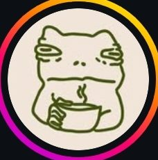
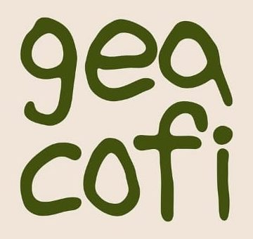

Lo más distintivo de la marca es la convivencia de dos registros que se complementan.
Las piezas gráficas son claras, crema, dibujadas a mano y con humor: la rana medio dormida, el lettering redondeado, la carta en minúsculas. Las fotografías y el local van al revés: fondos oscuros, luz ámbar de tungsteno, hierro negro, primeros planos de métodos de filtrado y masas laminadas.
Esa tensión es la marca: sabe mucho de café pero no se lo toma en serio. Una web genérica elegiría uno de los dos registros. La propuesta debería usar los dos y hacer que el pasaje entre ellos sea parte de la experiencia.
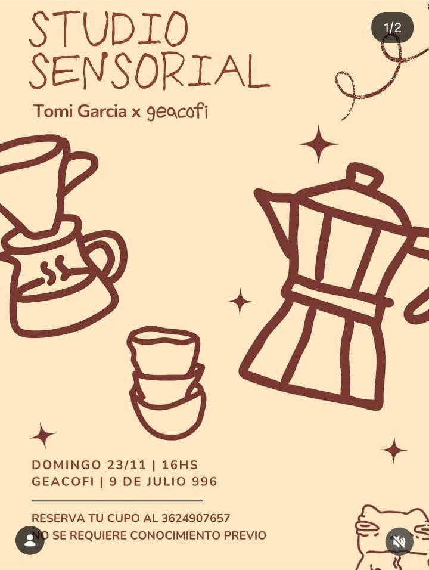
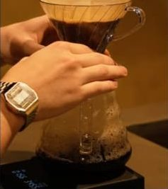
Seis atributos, cada uno con su evidencia en las piezas y lo que implica para la web.
Obs. La rana tiene párpados caídos y sonrisa de satisfacción; siempre está quieta, con la taza.
En la webRitmo lento: aire generoso, animaciones suaves y largas, nada que grite "comprá ya".
Obs. Carta con Aeropress, Origami, V60 y Chemex; el taller sensorial aclara "no se requiere conocimiento previo".
En la webExplicar cada método en una línea simple, con datos de barista (gramos, tiempo) como detalle, no como barrera.
Obs. Logo manuscrito, íconos dibujados, recuadros de la carta con línea temblorosa, vaso marcado con la rana.
En la webBordes, subrayados y separadores con trazo irregular; nada de íconos de librería.
Obs. "shot chiquito", "huevito revuelto", "latte pero con hielo", "café y eso…", el "golden cofi".
En la webMicrocopy en minúsculas y con voz propia en botones, estados vacíos y confirmaciones.
Obs. Música de Madlib y MF Doom en un post, set de vinilos, feria de discos, pop-up de streetwear (lostclub).
En la webUna sección de eventos con estética de flyer y lugar para la música (playlist o "lo que suena hoy").
Obs. Contacto por WhatsApp, chipa en la carta, gente trabajando con la compu; y a la vez una nominación nacional.
En la webCercanía directa (WhatsApp, cómo llegar) sin perder la prolijidad de un lugar premiado.
HEX muestreados de las piezas digitales (logo, destacadas, flyers y fotos). Son aproximados: la carta impresa da un verde más claro por la impresión.
Propuesta Proporción sugerida para la web
El ámbar no se usa como color de interfaz: vive en las fotos.
Lo que hay hoy y cinco fuentes que lo continúan, todas gratuitas en Google Fonts.
Ejemplo Cómo funcionarían juntas
Ilustración de línea, fotografía de luz baja y un espacio industrial cálido.

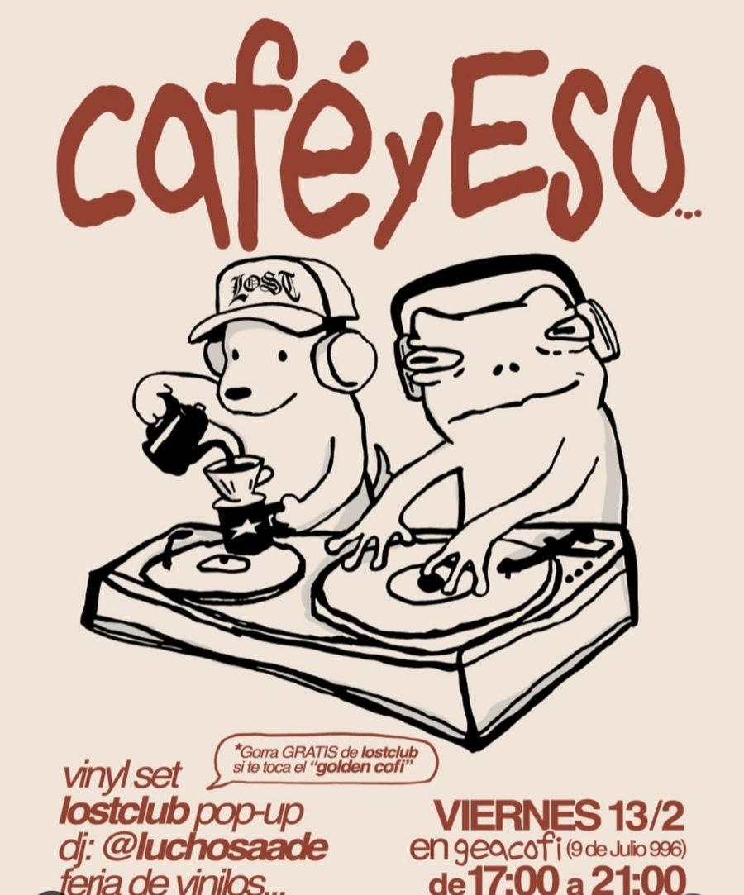
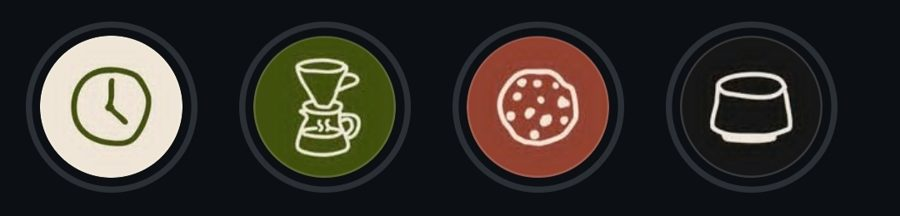
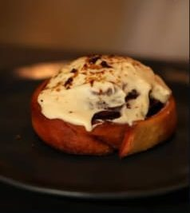

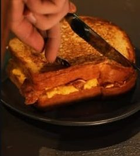

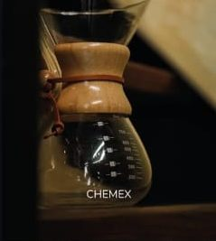
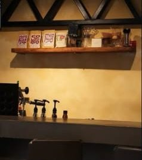
Minúsculas, diminutivos, vocabulario de barra y guiños. El nombre mismo castellaniza "coffee" en "cofi".
Una rana de párpados pesados que toma café. Es el activo más fuerte de la marca y hoy aparece en tres versiones de dibujo.
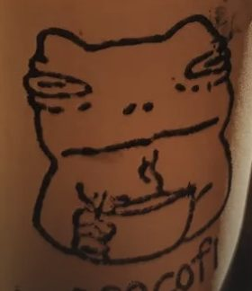
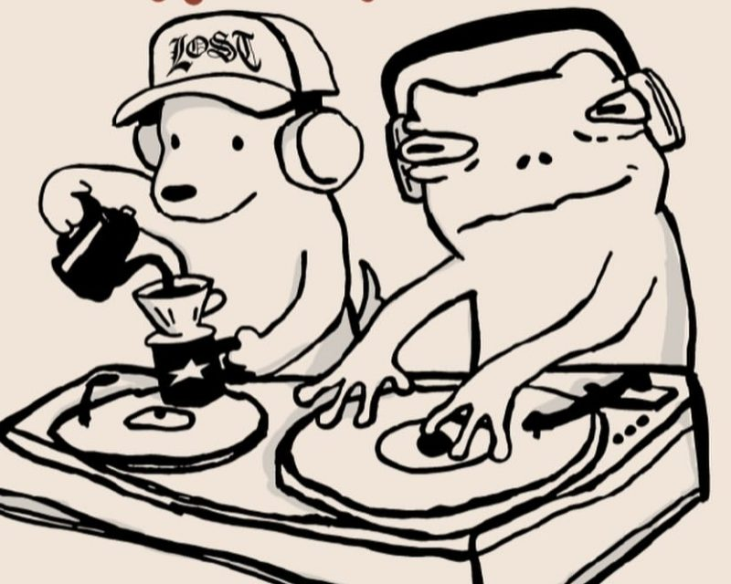
Dónde la identidad actual puede convertirse en experiencia digital. Interpretación
Secciones crema ilustradas que se alternan con bloques carbón de fotografía. El scroll como recorrido del día en el local.
Acompaña sin invadir: se asoma en bordes, parpadea lento, levanta la taza cuando algo se confirma.
Traducir la carta impresa a la web con sus categorías e íconos, editable fácil para actualizar precios.
Una sección corta para V60, Origami, Chemex y Aeropress con su dibujo y su perfil, para acercar al curioso.
Los eventos (vinilos, talleres, pop-ups) tienen un lenguaje propio que merece un espacio que se actualice solo.
El canal real de contacto ya es WhatsApp: botón fijo en mobile, sin formularios innecesarios.
Vectorizar el lettering y usar la misma mano para un set de íconos y separadores propios.
La nominación 2026 suma confianza; ubicarla con discreción, sin volverla protagonista.
Datos que las imágenes no responden y que cambian decisiones de la Etapa 2.